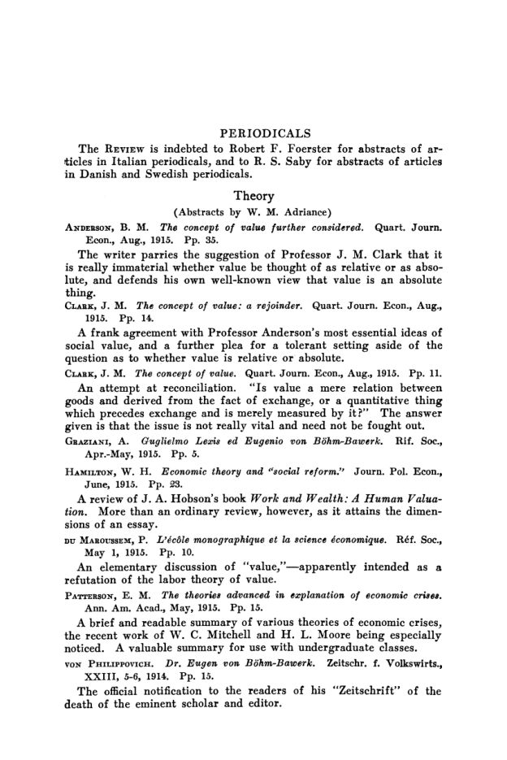

A população da Europa, o fator de carga e o canal do Panamá
Leitura: 14 min
Willcox mede a expansão da população europeia; Watkins leva o fator de carga para a teoria do custo; Millis, Putnam e Huebner tratam de imigração, crédito rural e do primeiro ano do canal do Panamá.


Em 11 de agosto de 1915, em San Francisco, Walter F. Willcox, da Cornell University, fez o discurso presidencial da American Economic Association sobre um único número. A Europa tinha cerca de 127 milhões de habitantes em meados do século XVIII; às vésperas da guerra, 452 milhões. O discurso abre o número de dezembro de 1915 da American Economic Review.
A reunião especial na costa do Pacífico explica parte da edição: dois outros artigos, de H. A. Millis e de G. G. Huebner, foram apresentados em Berkeley no dia seguinte. Millis trata dos efeitos econômicos da imigração japonesa sobre salários, terra e comércio no Oeste americano; Huebner faz o primeiro balanço do canal do Panamá, aberto à navegação comercial em agosto de 1914. Entre eles, G. P. Watkins propõe incorporar à teoria da produtividade um conceito vindo dos engenheiros eletricistas, o fator de carga, e George E. Putnam examina as leis estaduais de crédito agrícola e seu efeito sobre o arrendamento. Fecham o número resenhas, listas de livros novos, documentos oficiais, resumos de periódicos e notas sobre a reunião.
Quanto cresceu a população de origem europeia?
Walter F. Willcox (Cornell University) · “The Expansion of Europe in Population” · pp. 737–752
O censo moderno, diz Willcox, nasceu na Constituição federal americana como instrumento político, ligado à representação, e se espalhou com as instituições representativas; o subproduto científico é a medida da população. O tema fica restrito à população porque é o que se pode medir.
A primeira medida séria da Europa foi a de Süssmilch, em 1741: 130 milhões de habitantes contados, mais 20 milhões para omissões, total depois reduzido a 130 milhões. Os métodos variavam por país: o número de contribuintes do imposto sobre lareiras multiplicado por cinco, óbitos anuais por 36, batismos por 27. Willcox corrige as estimativas com censos posteriores, projetados para trás. Acrescenta 12,7 milhões ao sul e ao oeste e retira 6 milhões da Polônia e da Lituânia e 5 milhões da Rússia.
A comparação natural seria a China, mas os registros oficiais não resistem ao exame: no século anterior ao suposto censo de 1842, 160 de 162 anos mostram aumento, e o salto de 44 milhões entre 1774 e 1775 resultou de uma ordem imperial de revisão. Willcox conclui que a população chinesa ficou quase estacionária, com fomes, enchentes e guerras consumindo o crescimento dos anos normais.
Os demais exemplos vêm de censos e estimativas. Java teria passado de cerca de 4 milhões em 1800 para cerca de 30 milhões em 1905; a Índia, de uma estimativa de 178,5 milhões em 1851 para 244 milhões no censo de 1911; o Egito, de 2,46 milhões em 1800 para quase 11 milhões em 1907. No Japão, a população passou de 32,9 milhões em 1871 para 53,7 milhões em 1914.
No total, a população da Terra teria passado de perto de um bilhão, dois séculos antes, para quase um bilhão e dois terços. Willcox trata esse acréscimo como a única medida quantitativa de progresso aplicável ao mundo inteiro, preferível à longevidade, de Lord Acton, aplicável a poucos países, e à felicidade, de Bryce, que ninguém mede.
“Um critério pobre que dá uma resposta é preferível a um teoricamente melhor.” (“a poor criterion which gives an answer is preferable to one theoretically better”)
Por que a máquina parada encarece o produto?
G. P. Watkins (New York City) · “A Third Factor in the Variation of Productivity: The Load Factor” · pp. 753–786
Os engenheiros eletricistas chamam de fator de carga a razão entre a carga média e a carga máxima de uma usina num período. Watkins propõe tirar o conceito da tarifa elétrica e colocá-lo na teoria econômica, ao lado dos dois princípios clássicos de variação do custo unitário: os rendimentos decrescentes, que ele rebatiza de fator de proporcionalidade, e as economias de escala, que chama de fator de densidade. O terceiro mede quanto a demanda permite usar continuamente a capacidade instalada.
A eletricidade é o caso puro, porque não se armazena de forma econômica e porque juros e depreciação do capital fixo pesam muito no custo. A usina precisa ter capacidade para o pico; quem consome fora dele usa capacidade que já existe. Um consumidor que usa a mesma potência por uma hora ao dia impõe, por quilowatt-hora, cinco vezes o encargo de capital de quem a usa por cinco horas, desde que os picos coincidam com o do sistema. Daí as tarifas menores para usos fora do pico e o esforço das companhias para ampliar os usos da energia.
O princípio vale onde há muito capital fixo e um serviço que precisa ser consumido onde e quando é oferecido: ferrovias, bondes, telégrafo, telefone, correio. Os bondes nova-iorquinos têm a hora do rush; o telégrafo criou a carta noturna a tarifa reduzida. Na indústria comum, o problema é sazonal: em 1910, a razão de utilização calculada pelo órgão de estatística de Nova Jersey foi de 74,92% na média, de 64,42% em estruturas de aço e de 88,12% em papel. Hotéis de montanha suíços ocupavam 76% dos leitos em agosto e 14% em dezembro.
Watkins aplica a ideia ao trabalho e ao consumo. Salários de pessoal permanente são custo fixo, como o capital; os ofícios sazonais com pouco capital transferem a flutuação da demanda para os trabalhadores, e mais capital por trabalhador tende a regularizar o emprego. Conclui que os três fatores atuam juntos em qualquer empresa e que o custo unitário depende do grau de uso das instalações.
O que a imigração japonesa fez com salários e terra no Oeste?
H. A. Millis (University of Kansas) · “Some of the Economic Aspects of Japanese Immigration” · pp. 787–804
Millis, autor de The Japanese Problem in the United States (1915), deixa de lado as questões de regulação e de tratamento dos imigrantes e trata dos efeitos econômicos de uma imigração pequena e concentrada. O censo de 1890 registrou 2.039 japoneses residentes; em 1900 chegaram mais de 12 mil, e a imigração direta para os estados do Pacífico ficou entre 6 e 7 mil por ano até as restrições de 1907, o acordo sobre passaportes e a ordem presidencial que barrou a reemigração via Havaí, Canadá e México. O censo de 1910 contou 72.157 japoneses no território continental.
O que importa, para o autor, é a concentração em poucas ocupações e regiões. Em 1909 ele estimou, de cerca de 75 mil ocupados, de 38 mil a 40 mil na agricultura, de 10 mil a 12 mil no serviço doméstico, de 12 mil a 14 mil no comércio e uns 10 mil nas ferrovias. O recrutamento se fazia por empreiteiros, que forneciam turmas às ferrovias, vendiam mantimentos aos trabalhadores e cobravam, em geral, 5 centavos por dia de cada homem e US$ 1 por mês de intérprete.
Os dados da Interstate Commerce Commission indicam o efeito sobre os salários: de 1898 a 1908, a remuneração dos trabalhadores de via subiu 30% e 28% em dois distritos do Leste e do Meio-Oeste, ante 18% e 12% nos dois distritos do Oeste onde se concentravam os japoneses. A conclusão do autor é que a oferta organizada de mão de obra retardou a alta de salários, elevou lucros e o valor da terra e estimulou o açúcar de beterraba, a passa e outras culturas intensivas.
Na terra, o censo de 1910 registrou 2.502 propriedades operadas por japoneses, com 157.259 acres, das quais 1.816 na Califórnia. Millis vê no arrendamento um prêmio às grandes propriedades e um freio à subdivisão. Como política, propõe bolsas de trabalho para organizar a mão de obra sazonal, melhores alojamentos, regularidade no trabalho agrícola e, como solução final, a pequena propriedade cultivada pelo próprio dono, com regulação da venda de terras.
Crédito mais barato reduz o arrendamento rural?
George E. Putnam (University of Kansas) · “Agricultural Credit Legislation and the Tenancy Problem” · pp. 805–815
Em 1915, sete estados americanos tinham leis abrangentes de reforma do crédito rural, fruto de uma onda legislativa dos dois anos anteriores. Putnam as divide em dois tipos. Massachusetts, Utah e Wisconsin autorizaram bancos de terra privados e concorrentes, sob supervisão estadual; Nova York criou um banco central de terras ligado às associações de poupança e empréstimo. Missouri, Montana e Oklahoma foram além e adotaram empréstimos com recursos do Estado, com a promessa de juros bem abaixo dos correntes.
O Land Bank of the State of New York, adaptação da Landschaft central da Prússia, reunia mais de 40 associações, com ativos de cerca de US$ 20 milhões, e autorizara a primeira emissão de US$ 250 mil em títulos de dez anos a 4,5%, para emprestar às associações a 5%. A lei do Missouri previa empréstimos de US$ 250 a US$ 10 mil, até metade do valor da terra, por cinco a 25 anos, com capital inicial de US$ 1 milhão do tesouro estadual e títulos até US$ 40 milhões. Em Oklahoma, o empréstimo máximo era de US$ 2 mil.
O argumento central vai contra a expectativa dos legisladores. O crescimento do arrendamento, diz Putnam, decorre menos do crédito caro do que da alta especulativa do preço da terra desde 1900. Juros menores para todos os agricultores se capitalizariam no valor da terra; ele relata casos de agricultores prósperos que se endividavam para comprar mais terra à espera da ajuda oficial. O efeito poderia ser concentrar a propriedade e agravar o arrendamento.
A Nova Zelândia combinou empréstimos baratos com imposto progressivo sobre a terra, mas Putnam considera a solução inviável diante da fraqueza da administração tributária dos estados. Propõe limitar o crédito por pessoa, emprestar só para a compra de terra e exigir que o comprador a cultive. Para os proprietários, bastariam companhias privadas reguladas; para o arrendatário, a ajuda direta caberia ao governo federal, como no passado a política de terras livres.
O que o canal do Panamá mudou no primeiro ano?
G. G. Huebner (University of Pennsylvania) · “Economic Aspects of the Panama Canal” · pp. 816–829
O primeiro navio mercante atravessou o canal em 15 de agosto de 1914, quando a guerra europeia acabava de começar. Huebner, que trabalhara por dois anos no estudo de tráfego e pedágios que precedeu a fixação das tarifas, faz o balanço dos primeiros dez meses e meio: 1.088 navios mercantes, 4.969.792 toneladas de carga e US$ 4.424.256 em pedágios. O tráfego de cabotagem entre as duas costas americanas passou de 40% do total, quando se previam 10% a 11%; o internacional ficou abaixo do esperado por causa da guerra.
O primeiro efeito é sobre as rotas. A distância de Nova York a San Francisco ficou 7.873 milhas náuticas menor que pela rota de Magalhães; a Valparaíso, 3.747 milhas; a Yokohama, 3.768 milhas a menos que por Suez. Um vapor de 10 nós economiza 33,3 dias até a costa do Pacífico. Onde a carga antes cruzava o istmo por ferrovia, o transbordo custava cerca de US$ 3 por tonelada no Panamá e US$ 3,50 em Tehuantepec, ante um pedágio equivalente a 80 a 90 centavos por tonelada de carga.
O segundo efeito é sobre o comércio. Os fretes de costa a costa pelo canal ficaram de 5% a 20% abaixo dos anteriores, com cinco linhas privadas no lugar de três e uma do governo. As ferrovias transcontinentais reduziram tarifas para a costa do Pacífico, mas só de 20% a 22% de seu tráfego vinha ou ia para o litoral atlântico, e o corte não se estenderia ao Meio-Oeste. O canal encurta muito mais as rotas dos Estados Unidos que as da Europa: de Liverpool a Valparaíso, só 1.540 milhas.
Huebner prevê crescimento gradual, não revolução: transporte é só um elemento do comércio internacional. Defende uma marinha mercante americana com leis de navegação revistas e subvenções postais, regulação em vez de proibição para os navios de ferrovias e permissão para exportadores se associarem.
O que mais há na edição?
As resenhas incluem The Happiness of Nations, de James MacKaye, por Henry Pratt Fairchild; Railroads: Finance and Organization, de William Z. Ripley, por George O. Virtue; Some Aspects of the Tariff Question, de F. W. Taussig, por H. R. Mussey; o estudo de R. H. Tawney sobre o salário mínimo na alfaiataria inglesa, por John A. Ryan; Livelihood and Poverty, de A. L. Bowley e A. R. Burnett-Hurst, por Frank H. Streightoff; a Standard Accident Table de I. M. Rubinow, por Willard C. Fisher; e Reflections on Violence, de Georges Sorel, por John Graham Brooks. Os documentos tratam de centrais elétricas, tarifas do antracito, leis estaduais sobre empresas de outros estados, números-índice de preços a varejo e do relatório do censo sobre riqueza, dívida e tributação. As notas descrevem a reunião especial de San Francisco e consultam os sócios sobre entregar a revista com as folhas já cortadas.
Na minha leitura
Na minha leitura, o número de dezembro de 1915 é um exercício de medida. Willcox corrige estimativas do século XVIII com censos posteriores e descarta séries oficiais que crescem regularmente demais; Watkins transforma uma razão de engenharia em categoria de custo; Millis usa estatísticas salariais por distrito e a parcela de cada grupo no trabalho de cada cultura; Huebner mede o canal em milhas, dias e centavos por tonelada.
Putnam acrescenta o raciocínio de equilíbrio que falta às boas intenções: um subsídio ao juro que vale para todos os compradores tende a se transformar em preço da terra. É a mesma pergunta que atravessa a edição, sobre quem fica, no fim, com o ganho de uma mudança de custo.
Glossário
- Fator de carga (load factor)
- razão entre a demanda média e a demanda máxima de um serviço num período.
- Fator de diversidade
- razão entre a soma das demandas máximas dos consumidores e a demanda máxima do sistema.
- Fator de capacidade
- razão entre a produção média e a produção possível com uso contínuo da capacidade nominal.
- Rendimentos decrescentes
- queda do produto adicional quando se aplica mais trabalho e capital a uma área fixa de terra.
- Banco de terras (land bank)
- instituição que empresta a longo prazo com hipoteca rural e se financia com títulos lastreados nessas hipotecas.
- Amortização
- pagamento do principal em parcelas periódicas, junto com os juros, ao longo do prazo do empréstimo.
- Cabotagem
- navegação comercial entre portos do mesmo país.
- Tonelada líquida de registro
- medida da capacidade útil de um navio, base de cálculo do pedágio do canal.
Artigos (5)
- The Expansion of Europe in Population — Walter F. Willcox (Cornell University) (pp. 737–752) · resenha acima · JSTOR
- A Third Factor in the Variation of Productivity: The Load Factor — G. P. Watkins (New York City) (pp. 753–786) · resenha acima · comentário completo · JSTOR
- Some of the Economic Aspects of Japanese Immigration — H. A. Millis (University of Kansas) (pp. 787–804) · resenha acima · JSTOR
- Agricultural Credit Legislation and the Tenancy Problem — George E. Putnam (University of Kansas) (pp. 805–815) · resenha acima · JSTOR
- Economic Aspects of the Panama Canal — G. G. Huebner (University of Pennsylvania) (pp. 816–829) · resenha acima · comentário completo · JSTOR
Resenhas (26)
- James MacKaye, The Happiness of Nations: A Beginning in Political Engineering — Henry Pratt Fairchild (pp. 830–832). Ensaio que propõe uma “engenharia política” orientada pela felicidade. JSTOR
- John McFarlane, Economic Geography — Avard Longley Bishop (pp. 834–835). Manual de geografia econômica, com mapas e bibliografia. JSTOR
- Giuseppe Prato, L'Evoluzione Agricola nel Secolo XVIII e outros estudos — Frederick C. Dietz (pp. 835–837). Estudos de história econômica do Piemonte publicados nas memórias da Academia de Ciências de Turim. JSTOR
- John A. Todd, The World's Cotton Crops — Melvin T. Copeland (pp. 843–844). Panorama mundial da produção de algodão. JSTOR
- William Z. Ripley, Railroads: Finance and Organization — George O. Virtue (pp. 845–850). Estudo das finanças e da organização das ferrovias americanas. JSTOR
- Watarai, Nationalization of Railways in Japan — Ernest Ritson Dewsnup (pp. 850–852). Estudo sobre a estatização das ferrovias japonesas. JSTOR
- Peter Heinrich Schmidt, Die Schweiz und die Europäische Handelspolitik — Simon Litman (pp. 853–855). A Suíça e a política comercial europeia. JSTOR
- Aughinbaugh, Selling Latin America — Selden O. Martin (pp. 855–856). Guia sobre a venda de produtos na América Latina. JSTOR
- C. E. Knoeppel, Installing Efficiency Methods — Frederic G. Coburn (pp. 857–859). Manual de implantação de métodos de eficiência na fábrica. JSTOR
- Hammond V. Hayes, Public Utilities: Their Fair Present Value and Return — John Bauer (pp. 859–861). Livro sobre avaliação e retorno justo de empresas de serviços públicos. JSTOR
- John Charles Lounsbury Fish, Engineering Economics: First Principles — Edwin Bidwell Wilson (pp. 861–864). Princípios de economia aplicada à engenharia. JSTOR
- R. H. Tawney, The Establishment of Minimum Rates in the Tailoring Industry under the Trade Boards Act of 1909 — John A. Ryan (pp. 868–870). Estudo do salário mínimo na alfaiataria britânica. JSTOR
- S. V. Doraiswami, Indian Finance, Currency and Banking — E. W. Kemmerer (pp. 872–874). Livro sobre finanças, moeda e bancos na Índia. JSTOR
- Frank William Taussig, Some Aspects of the Tariff Question — H. R. Mussey (pp. 876–879). Estudos de Taussig sobre a tarifa e indústrias protegidas. JSTOR
- Willford Isbell King, The Valuation of Urban Realty for Purposes of Taxation — Lawson Purdy (pp. 879–881). Avaliação de imóveis urbanos para fins tributários, com seções sobre Wisconsin. JSTOR
- Negroes in the United States (Bureau of the Census, Bulletin 129) — L. L. Bernard (pp. 882–885). Boletim estatístico do Census Bureau. JSTOR
- Warren S. Thompson, Population: A Study in Malthusianism — G. B. L. Arner (pp. 885–886). Reexame estatístico da teoria de Malthus. JSTOR
- The Medico-Actuarial Mortality Investigation — W. F. Gephart (pp. 886–889). Investigação atuarial de mortalidade em cinco volumes. JSTOR
- Charles A. Ellwood, The Social Problem: A Constructive Analysis — Henry Pratt Fairchild (pp. 891–892). Análise sociológica do problema social. JSTOR
- Edward T. Devine, The Normal Life — George B. Mangold (pp. 892–894). Conferências sobre as condições de uma vida familiar normal. JSTOR
- The Pittsburgh District: Civic Frontage; Wage-Earning Pittsburgh — Herbert E. Mills (pp. 894–895). Volumes do levantamento social de Pittsburgh. JSTOR
- Lawrence Veiller, A Model Housing Law — James Ford (pp. 896–899). Proposta de lei-modelo de habitação. JSTOR
- A. L. Bowley e A. R. Burnett-Hurst, Livelihood and Poverty — Frank H. Streightoff (pp. 899–901). Levantamento das condições econômicas de famílias operárias em quatro cidades inglesas. JSTOR
- I. M. Rubinow, A Standard Accident Table as a Basis for Compensation Rates — Willard C. Fisher (pp. 903–906). Tabela de acidentes para o cálculo de prêmios de indenização. JSTOR
- William English Walling, The Socialists and the War — John Graham Brooks (pp. 909–912). Coletânea documental sobre a posição dos socialistas diante da guerra. JSTOR
- Georges Sorel, Reflections on Violence — John Graham Brooks (pp. 912–915). Tradução inglesa do ensaio de Sorel. JSTOR
Novos livros (17)
- New Books (pp. 832–834). Lista de livros novos: obras gerais, teoria e sua história. JSTOR
- New Book (pp. 838–842). Lista de livros novos: história e geografia econômica. JSTOR
- New Books (pp. 844–845). Lista de livros novos: agricultura, mineração, silvicultura e pesca. JSTOR
- New Books (pp. 845). Lista de livros novos: indústrias manufatureiras. JSTOR
- New Books (pp. 852–853). Lista de livros novos: transporte e comunicações. JSTOR
- New Books (pp. 856–857). Lista de livros novos: comércio e crises comerciais. JSTOR
- New Books (pp. 865–868). Lista de livros novos: contabilidade, métodos de negócios e investimentos. JSTOR
- New Books (pp. 868). Lista de livros novos: capital e organização capitalista. JSTOR
- New Books (pp. 870–871). Lista de livros novos: trabalho e organizações de trabalhadores. JSTOR
- New Books (pp. 874–876). Lista de livros novos: moeda, preços, crédito e bancos. JSTOR
- New Books (pp. 881–882). Lista de livros novos: finanças públicas, tributação e tarifa. JSTOR
- New Books (pp. 889–890). Lista de livros novos: população e migração. JSTOR
- New Books (pp. 901–903). Lista de livros novos: problemas sociais e reformas. JSTOR
- New Books (pp. 906–909). Lista de livros novos: seguros e pensões. JSTOR
- New Books (pp. 909). Lista de livros novos: pauperismo e assistência. JSTOR
- New Books (pp. 915). Lista de livros novos: socialismo e cooperativas. JSTOR
- New Books (pp. 915–916). Lista de livros novos: estatística e seus métodos. JSTOR
Documentos, periódicos e notas (3)
- Documents, Reports, and Legislation (pp. 917–946). Resumos de documentos oficiais: produção de algodão, centrais elétricas, tarifas do antracito, leis sobre empresas de outros estados, números-índice de preços a varejo e relatórios sobre tributação. JSTOR
- Periodicals (pp. 947–985). Resumos de artigos de periódicos, por área. JSTOR
- Notes (pp. 986–1003). Notas sobre a reunião especial de San Francisco, a entrega da revista com folhas cortadas e outras notícias. JSTOR
Fontes
- The Expansion of Europe in Population (pp. 737–752). JSTOR · Internet Archive (PDF)
- A Third Factor in the Variation of Productivity: The Load Factor (pp. 753–786). JSTOR · Internet Archive (PDF)
- Some of the Economic Aspects of Japanese Immigration (pp. 787–804). JSTOR · Internet Archive (PDF)
- Agricultural Credit Legislation and the Tenancy Problem (pp. 805–815). JSTOR · Internet Archive (PDF)
- Economic Aspects of the Panama Canal (pp. 816–829). JSTOR · Internet Archive (PDF)
- [untitled] The American Economic Review, (1915-12-01), pages 830-832 (pp. 830–832). JSTOR · Internet Archive (PDF)
- New Books (pp. 832–834). JSTOR · Internet Archive (PDF)
- [untitled] The American Economic Review, (1915-12-01), pages 834-835 (pp. 834–835). JSTOR · Internet Archive (PDF)
- [untitled] The American Economic Review, (1915-12-01), pages 835-837 (pp. 835–837). JSTOR · Internet Archive (PDF)
- New Book (pp. 838–842). JSTOR · Internet Archive (PDF)
- [untitled] The American Economic Review, (1915-12-01), pages 843-844 (pp. 843–844). JSTOR · Internet Archive (PDF)
- New Books (pp. 844–845). JSTOR · Internet Archive (PDF)
- New Books (pp. 845). JSTOR · Internet Archive (PDF)
- [untitled] The American Economic Review, (1915-12-01), pages 845-850 (pp. 845–850). JSTOR · Internet Archive (PDF)
- [untitled] The American Economic Review, (1915-12-01), pages 850-852 (pp. 850–852). JSTOR · Internet Archive (PDF)
- New Books (pp. 852–853). JSTOR · Internet Archive (PDF)
- [untitled] The American Economic Review, (1915-12-01), pages 853-855 (pp. 853–855). JSTOR · Internet Archive (PDF)
- [untitled] The American Economic Review, (1915-12-01), pages 855-856 (pp. 855–856). JSTOR · Internet Archive (PDF)
- New Books (pp. 856–857). JSTOR · Internet Archive (PDF)
- [untitled] The American Economic Review, (1915-12-01), pages 857-859 (pp. 857–859). JSTOR · Internet Archive (PDF)
- [untitled] The American Economic Review, (1915-12-01), pages 859-861 (pp. 859–861). JSTOR · Internet Archive (PDF)
- [untitled] The American Economic Review, (1915-12-01), pages 861-864 (pp. 861–864). JSTOR · Internet Archive (PDF)
- New Books (pp. 865–868). JSTOR · Internet Archive (PDF)
- New Books (pp. 868). JSTOR · Internet Archive (PDF)
- [untitled] The American Economic Review, (1915-12-01), pages 868-870 (pp. 868–870). JSTOR · Internet Archive (PDF)
- New Books (pp. 870–871). JSTOR · Internet Archive (PDF)
- [untitled] The American Economic Review, (1915-12-01), pages 872-874 (pp. 872–874). JSTOR · Internet Archive (PDF)
- New Books (pp. 874–876). JSTOR · Internet Archive (PDF)
- [untitled] The American Economic Review, (1915-12-01), pages 876-879 (pp. 876–879). JSTOR · Internet Archive (PDF)
- [untitled] The American Economic Review, (1915-12-01), pages 879-881 (pp. 879–881). JSTOR · Internet Archive (PDF)
- New Books (pp. 881–882). JSTOR · Internet Archive (PDF)
- [untitled] The American Economic Review, (1915-12-01), pages 882-885 (pp. 882–885). JSTOR · Internet Archive (PDF)
- [untitled] The American Economic Review, (1915-12-01), pages 885-886 (pp. 885–886). JSTOR · Internet Archive (PDF)
- [untitled] The American Economic Review, (1915-12-01), pages 886-889 (pp. 886–889). JSTOR · Internet Archive (PDF)
- New Books (pp. 889–890). JSTOR · Internet Archive (PDF)
- [untitled] The American Economic Review, (1915-12-01), pages 891-892 (pp. 891–892). JSTOR · Internet Archive (PDF)
- [untitled] The American Economic Review, (1915-12-01), pages 892-894 (pp. 892–894). JSTOR · Internet Archive (PDF)
- [untitled] The American Economic Review, (1915-12-01), pages 894-895 (pp. 894–895). JSTOR · Internet Archive (PDF)
- [untitled] The American Economic Review, (1915-12-01), pages 896-899 (pp. 896–899). JSTOR · Internet Archive (PDF)
- [untitled] The American Economic Review, (1915-12-01), pages 899-901 (pp. 899–901). JSTOR · Internet Archive (PDF)
- New Books (pp. 901–903). JSTOR · Internet Archive (PDF)
- [untitled] The American Economic Review, (1915-12-01), pages 903-906 (pp. 903–906). JSTOR · Internet Archive (PDF)
- New Books (pp. 906–909). JSTOR · Internet Archive (PDF)
- New Books (pp. 909). JSTOR · Internet Archive (PDF)
- [untitled] The American Economic Review, (1915-12-01), pages 909-912 (pp. 909–912). JSTOR · Internet Archive (PDF)
- [untitled] The American Economic Review, (1915-12-01), pages 912-915 (pp. 912–915). JSTOR · Internet Archive (PDF)
- New Books (pp. 915). JSTOR · Internet Archive (PDF)
- New Books (pp. 915–916). JSTOR · Internet Archive (PDF)
- Documents, Reports, and Legislation (pp. 917–946). JSTOR · Internet Archive (PDF)
- Periodicals (pp. 947–985). JSTOR · Internet Archive (PDF)
- Notes (pp. 986–1003). JSTOR · Internet Archive (PDF)
- Sumário da edição no JSTOR: The American Economic Review, vol. 5, nº 4.
Documento em domínio público (EUA, publicado antes de 1931), via JSTOR Early Journal Content e Internet Archive. Resumo e comentário do autor deste site, sem afiliação com a American Economic Association. Encontrou um erro? Escreva: a correção é publicada no próprio texto, com data.
← Nº 137 · A crise de 1914, a tarifa no preço final e a fusão dos sindicatos Nº 139 · O lucro do pequeno negócio, o padrão de vida e a renda da fazenda →